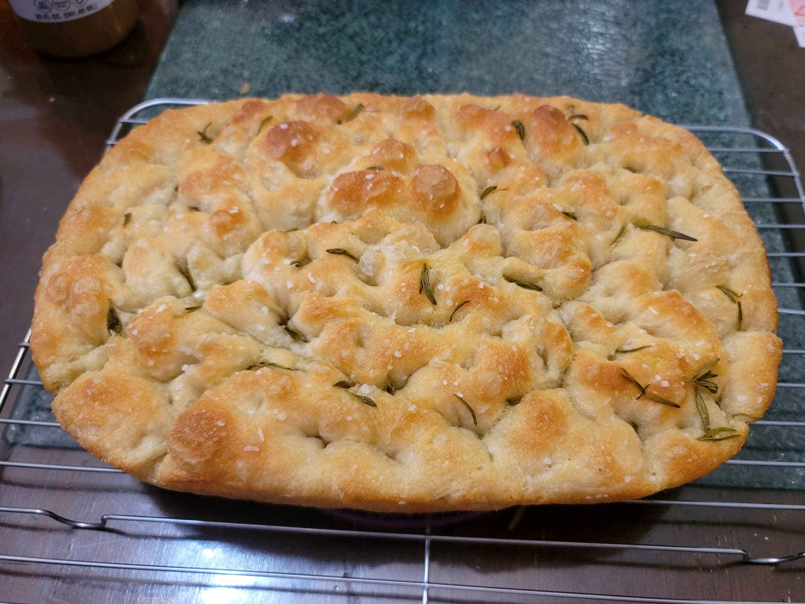

Focaccia

Ingredients:
- 2 1/4 tsp Active dry yeast
- 455 g (2 cups) Water, about 105-110 degrees Fahrenheit
- 512 g Bread flour or AP flour
- 10 g Salt
- Butter, for greasing
- 4~ tbsp Olive oil + more
- Flaky salt
- Optional: Rosemary or other toppings
Instructions:
- Combine the yeast and warm water. Stir so that the yeast dissolves. Let rest for about 15 minutes for the yeast to activate. Place the flour and salt into a large mixing bowl and whisk together. When the yeast is activated, add the yeast and water to the dry ingredients. Mix with a rubber spatula until a homogenous dough ball. Rub the surface of the dough ball with olive oil, getting oil even underneath the dough ball. Either place the dough ball into a greased sealable container or cover the bowl with plastic wrap. Transfer to a fridge to chill for at least 12 hour to 3 days.
- When ready to bake, grease a 9x13 inch baking pan with butter. Then place 2 tablespoons of olive oil into the pan. With hands lightly coated with olive oil, deflate the dough by releasing it from the sides of the container and pulling the sides into the center. Rotate the container as you deflate the dough to make a rough ball. Transfer the dough to the baking pan, rolling it in the oil to coat it completely. Let rest for 2-4 hours to rise and spread to mostly fill the pan.
- Preheat the oven to 425 degrees Fahrenheit. When the dough is ready, sprinkle the rosemary over it. Then drizzle the remaining 2 tablespoons of olive oil over the dough. With lightly oiled hands, push all of your fingers into the dough to touch the bottom of the pan. Do this all over the dough to create dimples throughout the bread. Then sprinkle the dough generously with flaky salt.
- Place the dough into the oven. Bake for about 25-30 minutes, or until the bread is golden and crisp on the edges.
- Remove from the oven. Transfer the bread from the baking pan to a cooling rack. Let cool for 10 minutes before serving to eat immediately, or let it cool completely to use for sandwiches.